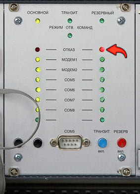

3. Нет перехода на «Резервный» комплект
3.1. Возможно неисправен МКУ «Резервного» комплекта
Заменить МКУ
Не загружается процессорный модуль СРС «Резервного» комплекта, на передней панеле горит красный светодиод «Отказ». Попробуйте перезагрузить процессорный модуль СРС, отключив и включив питание на МИП. Если это не помогло, то:
3.2. Возможно неисправен модуль СРС
Заменить модуль СРС
3.3. Возможно неисправен МВК
Заменить МВК
Светодиодная индикация панели БМ.
Красный светодиод показывает, что
процессорный модуль СРС Резервного
комплекта не загрузился
